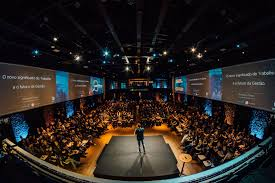
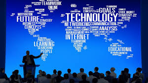

History
TechCon began in 2015 as a small meet-up for tech enthusiasts and has since evolved into one of the largest technology conferences in the region. Over the years, it has brought together innovators, developers, and entrepreneurs from around the world to share ideas and shape the future of technology.


Our Mission
Tech Conference 2024 aims to inspire innovation and collaboration by bringing together industry leaders, technology professionals, students, and enthusiasts. We provide a platform to explore emerging trends, share groundbreaking ideas, and shape the future of technology through networking, learning, and hands-on experiences.

Past Speakers
Dr. Amina Kariuki

Biography: Dr. Amina Kariuki is a Kenyan AI researcher and data scientist who has led several high-impact projects on ethical artificial intelligence and machine learning applications in healthcare. She has published widely and is a sought-after speaker at international conferences.
Contribution: Dr. Kariuki pioneered the development of scalable AI tools for rural hospitals and advocated for responsible AI policies in Africa.
John Mwangi

Biography: John Mwangi is a cybersecurity expert and the founder of a regional cyber-defense firm. He has worked with both government and private sectors to improve digital safety and resilience against cyber threats.
Contribution: He introduced a cost-effective cybersecurity training program for small businesses, improving security literacy and reducing cybercrime incidents.
Sophia Lee

Biography: Sophia Lee is a leading innovator in renewable energy technologies and IoT systems. She has been instrumental in integrating smart energy solutions into urban infrastructure.
Contribution: Sophia’s work in IoT-enabled renewable energy grids has transformed how African cities manage power distribution, making it more efficient and sustainable.